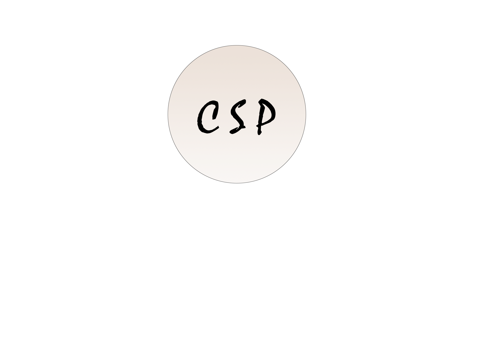
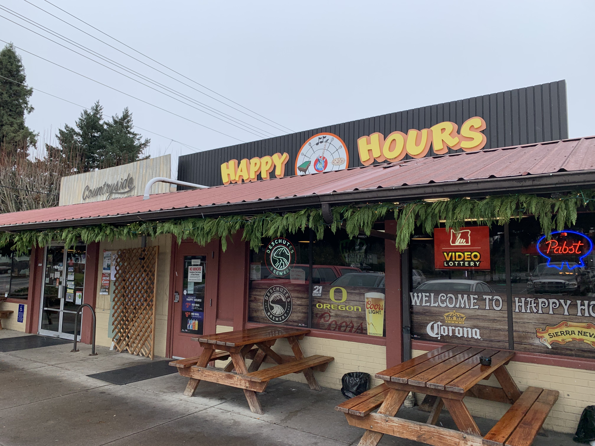
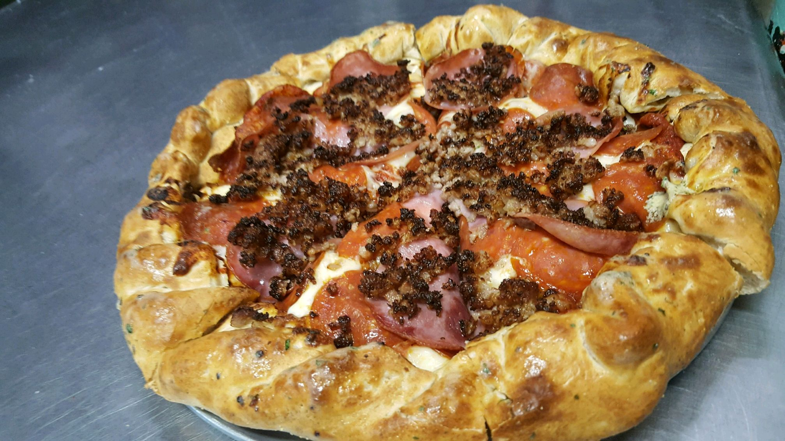

Countryside Pizza & Grill

Your Local Pizza Dine
The Restaurant
Menu
About Us
Location & Contact


Click the "About Us" tab to learn more of our name!
We offer amazing dine in services for you to enjoy!
Check out the location and hours of operation!